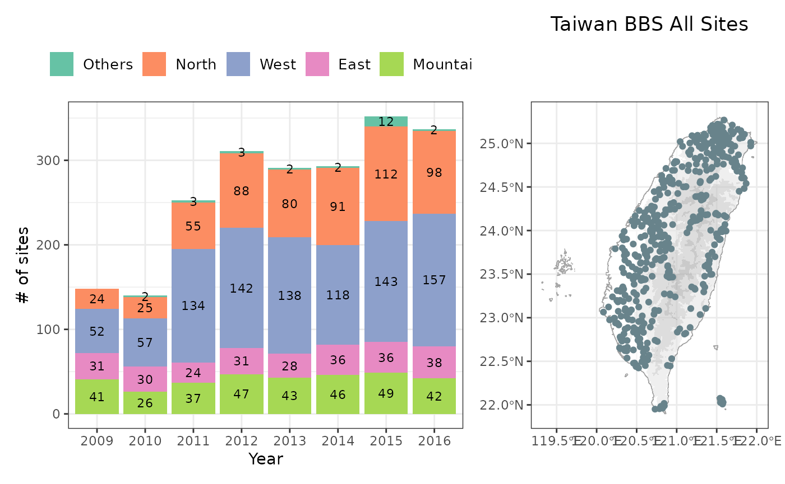
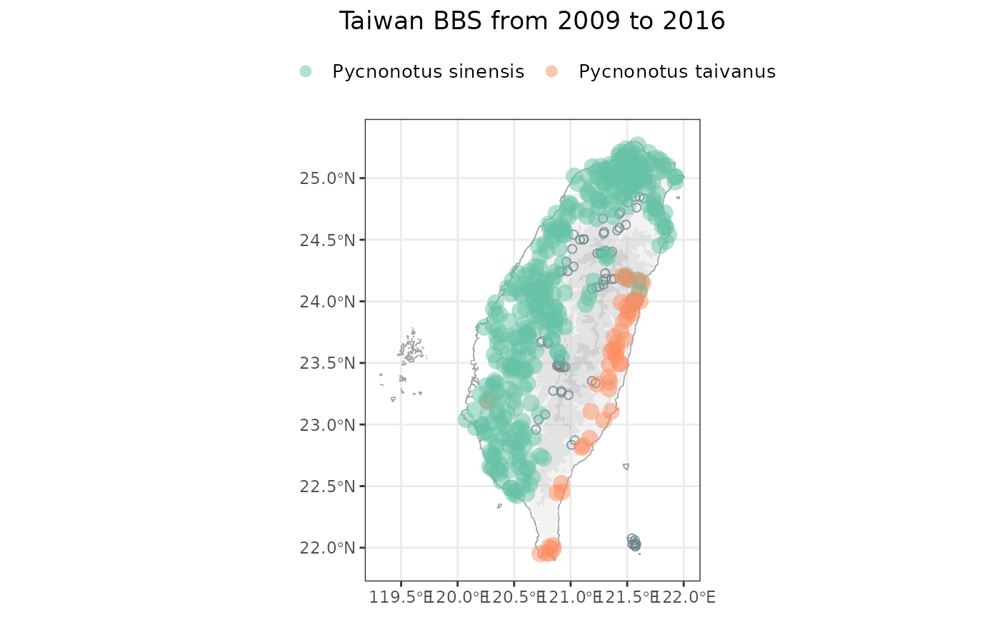

Introduction
Hello, birder! The Taiwan Breeding Bird Survey (BBS) conducts annual
surveys, providing a valuable systematic dataset for studying species
trends. The bbsTaiwan package is designed to make accessing
and using this precious Taiwan BBS data easier. In this article, we aim
to demonstrate the general applications you can perform with this
package. Enjoy coding with birdies!
Overview of BBS Surveying Effort
Before diving into the bird occurrence data, it’s helpful to first
understand when and where the surveys were conducted. This includes
knowing the number of sites, their locations, and the number of sites
surveyed each year. The bbsTaiwan package provides several
functions to help you get started with understanding the surveying
effort.
To see the number of sites surveyed each year, you can use the
bbs_history() function. This function has a
type argument with two options: "plot" and
"table". Selecting "plot" will display the
results as a ggplot graph, while "table" will
show the results in a tibble.
Additionally, the bbs_plotmap() function can be used to
visualize the distribution of a particular species. If you set the
argument to NULL, it will display the locations of all
sites that have been surveyed historically.
bbs_history(type = "plot")
bbs_plotmap(target_species = NULL)
If you prefer to work with tables and see the values directly,
bbsTaiwan has you covered! You can use the
bbs_history() function with the "table" option
to view the number of sites surveyed each year in a tabular format.
Additionally, you can use the bbs_sites() function to
access a complete list of sites and plots along with their
coordinates.
bbs_history(type = "table")
#> # A tibble: 8 × 6
#> year East Mountain North West Others
#> <chr> <int> <int> <int> <int> <int>
#> 1 2009 31 41 24 52 0
#> 2 2010 30 26 25 57 2
#> 3 2011 24 37 55 134 3
#> 4 2012 31 47 88 142 3
#> 5 2013 28 43 80 138 2
#> 6 2014 36 46 91 118 2
#> 7 2015 36 49 112 143 12
#> 8 2016 38 42 98 157 2
bbs_sites()
#> # A tibble: 4,160 × 6
#> site plot locationID locality decimalLatitude decimalLongitude
#> <chr> <chr> <chr> <chr> <dbl> <dbl>
#> 1 A02-01 01 A02-01_01 台北縣瑞芳 25.1 122.
#> 2 A02-01 02 A02-01_02 台北縣瑞芳 25.1 122.
#> 3 A02-01 03 A02-01_03 台北縣瑞芳 25.1 122.
#> 4 A02-01 04 A02-01_04 台北縣瑞芳 25.1 122.
#> 5 A02-01 05 A02-01_05 台北縣瑞芳 25.1 122.
#> 6 A02-01 06 A02-01_06 台北縣瑞芳 25.1 122.
#> 7 A02-01 07 A02-01_07 台北縣瑞芳 25.1 122.
#> 8 A02-01 08 A02-01_08 台北縣瑞芳 25.1 122.
#> 9 A02-01 09 A02-01_09 台北縣瑞芳 25.1 122.
#> 10 A02-01 10 A02-01_10 台北縣瑞芳 25.1 122.
#> # ℹ 4,150 more rowsData Fetch for Target Species
Now we come to the core function bbs_fetch(). This
function retrieves bird occurrence data from GBIF and summarizes it in a
more understandable format. The original data format on GBIF, which
includes event and occurrence data, is designed to be machine-readable
but can be difficult for humans to interpret. bbs_fetch()
addresses this by performing the following key steps:
Join: Combines the event, occurrence, and measurementorfacts datasheets from GBIF into a single cohesive dataset.
Filter: Retains only the observations for specified species using the
target_speciesargument.Zero Fill: Converts implicit missing values into explicit ones by filling in zeros for trips where the target species was not observed. Specifically, if a plot was visited during a particular year or trip but the target species was not observed, the species count will show a value of 0 for that row.
# Here is a list of the 32 endemic bird species in Taiwan, where the species name can be used as the input of the function.
#
# c("黑長尾雉", "白眉林鴝", "黃腹琉璃", "灰鷽", "小翼鶇", "白頭鶇", "赤腹山雀", "台灣竹雞", "繡眼畫眉", "台灣朱雀", "棕噪眉", "褐頭花翼", "台灣鷦眉", "小彎嘴", "大彎嘴", "台灣白喉噪眉", "台灣畫眉", "五色鳥", "台灣叢樹鶯", "火冠戴菊鳥", "烏頭翁", "台灣紫嘯鶇", "栗背林鴝", "黃山雀", "台灣藍鵲", "黃胸藪眉", "紋翼畫眉", "冠羽畫眉", "台灣噪眉", "白耳畫眉", "台灣山鷓鴣", "藍腹鷴")
bbs_fetch(target_species = "白頭翁")
#> # A tibble: 53,874 × 16
#> year month day site locationID decimalLatitude decimalLongitude weather
#> <dbl> <dbl> <dbl> <chr> <chr> <dbl> <dbl> <chr>
#> 1 2009 3 10 A02-01 A02-01_01 25.1 122. NA
#> 2 2009 3 10 A02-01 A02-01_01 25.1 122. NA
#> 3 2009 4 5 A02-01 A02-01_01 25.1 122. NA
#> 4 2009 4 26 A02-01 A02-01_01 25.1 122. NA
#> 5 2009 3 10 A02-01 A02-01_01 25.1 122. NA
#> 6 2009 4 26 A02-01 A02-01_01 25.1 122. NA
#> 7 2009 4 5 A02-01 A02-01_01 25.1 122. NA
#> 8 2009 4 26 A02-01 A02-01_02 25.1 122. NA
#> 9 2009 3 10 A02-01 A02-01_02 25.1 122. NA
#> 10 2009 4 5 A02-01 A02-01_02 25.1 122. NA
#> # ℹ 53,864 more rows
#> # ℹ 8 more variables: wind <chr>, habitat <chr>, scientificName <chr>,
#> # vernacularName <chr>, individualCount <dbl>, time_slot <chr>,
#> # distance <chr>, flock <chr>
bbs_fetch(target_species = c("烏頭翁", "白頭翁"))
#> # A tibble: 92,475 × 16
#> year month day site locationID decimalLatitude decimalLongitude weather
#> <dbl> <dbl> <dbl> <chr> <chr> <dbl> <dbl> <chr>
#> 1 2009 3 10 A02-01 A02-01_01 25.1 122. NA
#> 2 2009 3 10 A02-01 A02-01_01 25.1 122. NA
#> 3 2009 4 5 A02-01 A02-01_01 25.1 122. NA
#> 4 2009 4 26 A02-01 A02-01_01 25.1 122. NA
#> 5 2009 3 10 A02-01 A02-01_01 25.1 122. NA
#> 6 2009 4 26 A02-01 A02-01_01 25.1 122. NA
#> 7 2009 4 5 A02-01 A02-01_01 25.1 122. NA
#> 8 2009 4 26 A02-01 A02-01_02 25.1 122. NA
#> 9 2009 3 10 A02-01 A02-01_02 25.1 122. NA
#> 10 2009 4 5 A02-01 A02-01_02 25.1 122. NA
#> # ℹ 92,465 more rows
#> # ℹ 8 more variables: wind <chr>, habitat <chr>, scientificName <chr>,
#> # vernacularName <chr>, individualCount <dbl>, time_slot <chr>,
#> # distance <chr>, flock <chr>Finding it hard to choose a specific target species and want to
access the entire dataset for all species? One of the great features of
bbs_fetch() is that you can set
target_species = "全部" to retrieve the entire unfiltered
dataset.
bbs_fetch(target_species = "全部")
#> # A tibble: 373,786 × 16
#> year month day site locationID decimalLatitude decimalLongitude weather
#> <dbl> <dbl> <dbl> <chr> <chr> <dbl> <dbl> <chr>
#> 1 2009 3 10 A02-01 A02-01_01 25.1 122. NA
#> 2 2009 4 5 A02-01 A02-01_01 25.1 122. NA
#> 3 2009 4 5 A02-01 A02-01_01 25.1 122. NA
#> 4 2009 4 26 A02-01 A02-01_01 25.1 122. NA
#> 5 2009 3 10 A02-01 A02-01_01 25.1 122. NA
#> 6 2009 3 10 A02-01 A02-01_01 25.1 122. NA
#> 7 2009 4 5 A02-01 A02-01_01 25.1 122. NA
#> 8 2009 4 5 A02-01 A02-01_01 25.1 122. NA
#> 9 2009 3 10 A02-01 A02-01_01 25.1 122. NA
#> 10 2009 4 26 A02-01 A02-01_01 25.1 122. NA
#> # ℹ 373,776 more rows
#> # ℹ 8 more variables: wind <chr>, habitat <chr>, scientificName <chr>,
#> # vernacularName <chr>, individualCount <dbl>, time_slot <chr>,
#> # distance <chr>, flock <chr>Distribution of Target Species
Viewing the distribution of species (i.e., the sites where certain
species have been observed) is straightforward. Simply use the
bbs_plotmap() function and specify the species you are
interested in. This function can handle up to 5 species at a time to
prevent the plot from becoming too cluttered.
bbs_plotmap(target_species = c("烏頭翁", "白頭翁"))
What’s Next?
Not satisfied with the default functionality provided by
bbsTaiwan? There are a few additional steps you can take
beyond what this package offers:
If you need to summarize the data in a customized way and ready to dive into data wrangling, consider using the raw data available on the GBIF repository. Working directly with the raw data allows you to fully understand the data cleaning process and create a customized data structure tailored to your study objectives.
The raw data in Darwin Core format can be accessed easily by using the names of the relevant spreadsheets. These data objects are automatically loaded when you install the package.
occurrence
event
measurementorfacts